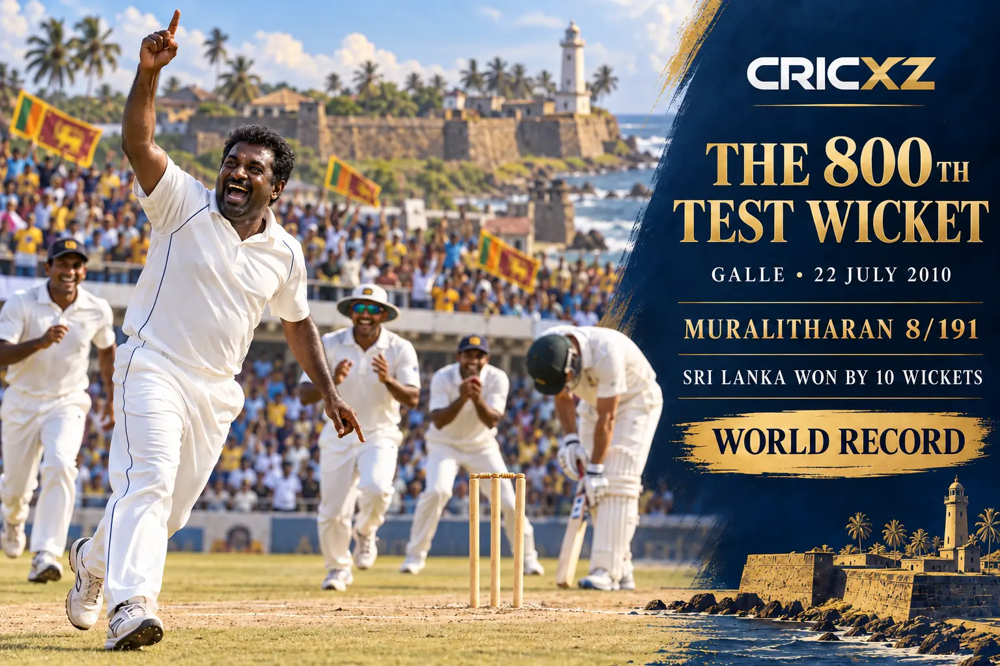

Test Bowling
- Matches
- 133
- Innings
- 230
- Wickets
- 800
- Best innings
- 9/51
- Bowling average
- 22.72
- Economy rate
- 2.47
- Five-wicket hauls
- 67
- Ten-wicket matches
- 22

Muttiah Muralitharan took a record 1,347 international wickets, including 800 in Tests and 534 in ODIs. The 1996 World Cup winner remains international cricket's highest wicket-taker.
Career statistics are final.
Muralitharan played his final international match in April 2011. The figures above were checked against ICC and established statistical records.
Across 495 international matches, Muralitharan claimed 1,347 wickets. His sharply turning off break, deceptive doosra, control and endurance made him Sri Lanka's leading strike bowler across nearly two decades.

On 22 July 2010, in the final Test of his career, Muralitharan had Pragyan Ojha caught at slip to reach exactly 800 Test wickets. He finished the Galle match against India with eight wickets as Sri Lanka completed a ten-wicket victory.
Muralitharan was a member of Sri Lanka's 1996 World Cup-winning squad and later helped his country reach the 2007 and 2011 finals. His 68 Men's Cricket World Cup wickets remain the most by a spin bowler in the tournament's history.
28 August 1992 – 22 July 2010
Debuted against Australia at Colombo and ended his Test career against India at Galle with 800 wickets.
12 August 1993 – 2 April 2011
Debuted against India at Colombo and made his final ODI appearance in the 2011 World Cup final.
22 December 2006 – 31 October 2010
Debuted against New Zealand at Wellington and made his final T20I appearance against Australia.
Finished as the highest wicket-taker in international cricket.
Set the world record across 133 Test matches.
Remains the leading wicket-taker in men's ODI cricket.
Recorded more five-wicket innings hauls than any other Test bowler.
Claimed a record 22 ten-wicket match hauls in Tests.
Produced his career-best Test figures against Zimbabwe at Kandy.
Helped Sri Lanka win its first men's Cricket World Cup.
Was part of Sri Lanka's joint-winning ICC Champions Trophy squad.
Became the first Sri Lankan inducted into the ICC Cricket Hall of Fame.
Leading spin-bowling wicket-taker in the men's tournament.
CricXZ is an independent cricket publication and is not affiliated with the ICC, Sri Lanka Cricket or any team.
Read Anil Kumble's career records, explore Chris Gayle's statistics, or browse all CricXZ player profiles.